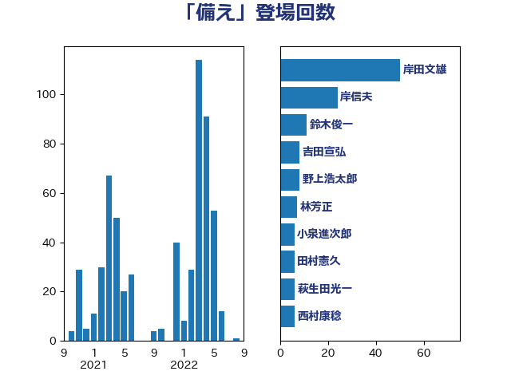

単語「備え」

| 岸田文雄 | 自由民主党 | 50 回 |
| 岸信夫 | 自由民主党 | 24 回 |
| 鈴木俊一 | 自由民主党 | 11 回 |
| 吉田宣弘 | 公明党 | 8 回 |
| 野上浩太郎 | 自由民主党 | 8 回 |
| 林芳正 | 自由民主党 | 7 回 |
| 小泉進次郎 | 自由民主党 | 6 回 |
| 田村憲久 | 自由民主党 | 6 回 |
| 萩生田光一 | 自由民主党 | 6 回 |
| 西村康稔 | 自由民主党 | 6 回 |
| 麻生太郎 | 自由民主党 | 6 回 |
| 佐藤正久 | 自由民主党 | 5 回 |
| 太栄志 | 立憲民主党 | 5 回 |
| 室井邦彦 | 日本維新の会 | 5 回 |
| 日下正喜 | 公明党 | 5 回 |
| 松野博一 | 自由民主党 | 5 回 |
| 高橋光男 | 公明党 | 5 回 |
| 吉田忠智 | 立憲民主党 | 4 回 |
| 堀内詔子 | 自由民主党 | 4 回 |
| 大串博志 | 立憲民主党 | 4 回 |
| 岩谷良平 | 日本維新の会 | 4 回 |
| 後藤茂之 | 自由民主党 | 4 回 |
| 斉藤鉄夫 | 公明党 | 4 回 |
| 杉久武 | 公明党 | 4 回 |
| 森本真治 | 立憲民主党 | 4 回 |
| 海江田万里 | 立憲民主党 | 4 回 |
| 熊谷裕人 | 立憲民主党 | 4 回 |
| 秋野公造 | 公明党 | 4 回 |
| 伊波洋一 | 無所属 | 3 回 |
| 古川元久 | 国民民主党 | 3 回 |
| 吉田はるみ | 立憲民主党 | 3 回 |
| 小沢雅仁 | 立憲民主党 | 3 回 |
| 岡本三成 | 公明党 | 3 回 |
| 岸真紀子 | 立憲民主党 | 3 回 |
| 川田龍平 | 立憲民主党 | 3 回 |
| 末松信介 | 自由民主党 | 3 回 |
| 柳ヶ瀬裕文 | 日本維新の会 | 3 回 |
| 柴田巧 | 日本維新の会 | 3 回 |
| 片山大介 | 日本維新の会 | 3 回 |
| 田村まみ | 国民民主党 | 3 回 |
| 石井啓一 | 公明党 | 3 回 |
| 石川博崇 | 公明党 | 3 回 |
| 竹内真二 | 公明党 | 3 回 |
| 緑川貴士 | 立憲民主党 | 3 回 |
| 赤羽一嘉 | 公明党 | 3 回 |
| 逢坂誠二 | 立憲民主党 | 3 回 |
| 重徳和彦 | 立憲民主党 | 3 回 |
| 馬場伸幸 | 日本維新の会 | 3 回 |
| こやり隆史 | 自由民主党 | 2 回 |
| 世耕弘成 | 自由民主党 | 2 回 |
| 今枝宗一郎 | 自由民主党 | 2 回 |
| 務台俊介 | 自由民主党 | 2 回 |
| 吉良よし子 | 日本共産党 | 2 回 |
| 吉良州司 | 無所属 | 2 回 |
| 和田義明 | 自由民主党 | 2 回 |
| 宮下一郎 | 自由民主党 | 2 回 |
| 小西洋之 | 立憲民主党 | 2 回 |
| 山口壯 | 自由民主党 | 2 回 |
| 柿沢未途 | 無所属 | 2 回 |
| 根本幸典 | 自由民主党 | 2 回 |
| 津島淳 | 自由民主党 | 2 回 |
| 浅野哲 | 国民民主党 | 2 回 |
| 田島麻衣子 | 立憲民主党 | 2 回 |
| 田嶋要 | 立憲民主党 | 2 回 |
| 矢倉克夫 | 公明党 | 2 回 |
| 舞立昇治 | 自由民主党 | 2 回 |
| 菅義偉 | 自由民主党 | 2 回 |
| 赤澤亮正 | 自由民主党 | 2 回 |
| 足立敏之 | 自由民主党 | 2 回 |
| 野田聖子 | 自由民主党 | 2 回 |
| 鈴木英敬 | 自由民主党 | 2 回 |
| 階猛 | 立憲民主党 | 2 回 |
| 馬場雄基 | 立憲民主党 | 2 回 |
| 高橋千鶴子 | 日本共産党 | 2 回 |
| 鬼木誠 | 立憲民主党 | 2 回 |
| ながえ孝子 | 無所属 | 1 回 |
| 上杉謙太郎 | 自由民主党 | 1 回 |
| 上田清司 | 国民民主党 | 1 回 |
| 中島克仁 | 立憲民主党 | 1 回 |
| 中川宏昌 | 公明党 | 1 回 |
| 中川貴元 | 自由民主党 | 1 回 |
| 丸川珠代 | 自由民主党 | 1 回 |
| 井上信治 | 自由民主党 | 1 回 |
| 伊佐進一 | 公明党 | 1 回 |
| 佐々木紀 | 自由民主党 | 1 回 |
| 佐藤英道 | 公明党 | 1 回 |
| 加藤勝信 | 自由民主党 | 1 回 |
| 北村経夫 | 自由民主党 | 1 回 |
| 吉田統彦 | 立憲民主党 | 1 回 |
| 和田有一朗 | 日本維新の会 | 1 回 |
| 土田慎 | 自由民主党 | 1 回 |
| 堀井巌 | 自由民主党 | 1 回 |
| 大口善徳 | 公明党 | 1 回 |
| 大塚耕平 | 国民民主党 | 1 回 |
| 大家敏志 | 自由民主党 | 1 回 |
| 大野敬太郎 | 自由民主党 | 1 回 |
| 宮口治子 | 立憲民主党 | 1 回 |
| 宮本岳志 | 日本共産党 | 1 回 |
| 宮路拓馬 | 自由民主党 | 1 回 |
| 小宮山泰子 | 立憲民主党 | 1 回 |
| 小林鷹之 | 自由民主党 | 1 回 |
| 尾崎正直 | 自由民主党 | 1 回 |
| 山井和則 | 立憲民主党 | 1 回 |
| 山口那津男 | 公明党 | 1 回 |
| 山本太郎 | れいわ新選組 | 1 回 |
| 山田賢司 | 自由民主党 | 1 回 |
| 岡本あき子 | 立憲民主党 | 1 回 |
| 岬麻紀 | 日本維新の会 | 1 回 |
| 島尻安伊子 | 自由民主党 | 1 回 |
| 市村浩一郎 | 日本維新の会 | 1 回 |
| 平井卓也 | 自由民主党 | 1 回 |
| 平沢勝栄 | 自由民主党 | 1 回 |
| 徳永エリ | 立憲民主党 | 1 回 |
| 新藤義孝 | 自由民主党 | 1 回 |
| 有村治子 | 自由民主党 | 1 回 |
| 木村英子 | れいわ新選組 | 1 回 |
| 末松義規 | 立憲民主党 | 1 回 |
| 本田顕子 | 自由民主党 | 1 回 |
| 杉本和巳 | 日本維新の会 | 1 回 |
| 東徹 | 日本維新の会 | 1 回 |
| 松沢成文 | 日本維新の会 | 1 回 |
| 枝野幸男 | 立憲民主党 | 1 回 |
| 根本匠 | 自由民主党 | 1 回 |
| 森山浩行 | 立憲民主党 | 1 回 |
| 橋本岳 | 自由民主党 | 1 回 |
| 櫛渕万里 | れいわ新選組 | 1 回 |
| 武田良太 | 自由民主党 | 1 回 |
| 池田佳隆 | 自由民主党 | 1 回 |
| 河野義博 | 公明党 | 1 回 |
| 泉健太 | 立憲民主党 | 1 回 |
| 清水貴之 | 日本維新の会 | 1 回 |
| 滝波宏文 | 自由民主党 | 1 回 |
| 牧山ひろえ | 立憲民主党 | 1 回 |
| 玉木雄一郎 | 国民民主党 | 1 回 |
| 田中健 | 国民民主党 | 1 回 |
| 田村智子 | 日本共産党 | 1 回 |
| 石井苗子 | 日本維新の会 | 1 回 |
| 石垣のりこ | 立憲民主党 | 1 回 |
| 礒崎哲史 | 国民民主党 | 1 回 |
| 神津たけし | 立憲民主党 | 1 回 |
| 福田達夫 | 自由民主党 | 1 回 |
| 稲津久 | 公明党 | 1 回 |
| 稲田朋美 | 自由民主党 | 1 回 |
| 羽田次郎 | 立憲民主党 | 1 回 |
| 自見はなこ | 自由民主党 | 1 回 |
| 船橋利実 | 自由民主党 | 1 回 |
| 若松謙維 | 公明党 | 1 回 |
| 茂木敏充 | 自由民主党 | 1 回 |
| 蓮舫 | 立憲民主党 | 1 回 |
| 藤川政人 | 自由民主党 | 1 回 |
| 藤木眞也 | 自由民主党 | 1 回 |
| 西岡秀子 | 国民民主党 | 1 回 |
| 西田実仁 | 公明党 | 1 回 |
| 西銘恒三郎 | 自由民主党 | 1 回 |
| 豊田俊郎 | 自由民主党 | 1 回 |
| 赤嶺政賢 | 日本共産党 | 1 回 |
| 近藤和也 | 立憲民主党 | 1 回 |
| 近藤昭一 | 立憲民主党 | 1 回 |
| 野中厚 | 自由民主党 | 1 回 |
| 野間健 | 立憲民主党 | 1 回 |
| 金子恭之 | 自由民主党 | 1 回 |
| 鈴木宗男 | 日本維新の会 | 1 回 |
| 鈴木庸介 | 立憲民主党 | 1 回 |
| 長坂康正 | 自由民主党 | 1 回 |
| 長妻昭 | 立憲民主党 | 1 回 |
| 阿部司 | 日本維新の会 | 1 回 |
| 青山周平 | 自由民主党 | 1 回 |
| 青山繁晴 | 自由民主党 | 1 回 |
| 青木愛 | 立憲民主党 | 1 回 |
| 青柳仁士 | 日本維新の会 | 1 回 |
| 高市早苗 | 自由民主党 | 1 回 |
| 高木かおり | 日本維新の会 | 1 回 |
| 高良鉄美 | 無所属 | 1 回 |
| 高階恵美子 | 自由民主党 | 1 回 |